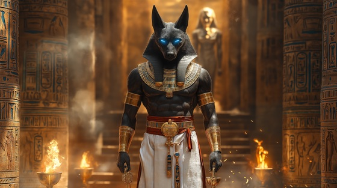

Enter the quiet sanctum of judgment with “Anubis – Weigher of Souls”, a solemn and thunderous metal hymn to the jackal-headed god of mummification, protection, and divine justice. In life or death, none pass unseen by his eternal gaze.
Who is Anubis?
Anubis (Inpu) is the ancient Egyptian god of the dead, funerary rites, embalming, and the guardian of tombs. He was believed to guide the souls of the dead to the Hall of Judgment, where the heart of the deceased is weighed against the feather of Ma’at.
Often shown as a black jackal or jackal-headed man, he symbolizes both protection and the impartial balance of truth. If a soul’s heart was heavy with sin, it would be devoured by the monster Ammit. If it was light and true, the soul could enter paradise.
Anubis: Weigher of Souls
In silent halls where hearts are weighed
I stand where judgment must be made
A jackal’s eyes, a hand of stone
I walk with those who die alone
No blade I wield, no torch I raise
But truth is sharp and light decays
I do not speak, I only see
The soul laid bare before decree
Feather to heart, let balance show
And from the scale, the verdict flows
I am Anubis — veil of night
The final law, the sacred rite
I do not love, I do not hate
I weigh the soul, reveal its fate
In halls of silence, tomb and scroll
I guard the gate, I judge the soul
Through desert tombs and cities gone
They call my name when breath is done
No crown I seek, no war I lead
I serve the oath, not power’s greed
In black and gold, I stand alone
With flint and flame, I carve the stone
The priests obey, the dead implore
But I am justice — nothing more
Feather to heart, let balance show
And from the scale, the verdict flows
I am Anubis — veil of night
The final law, the sacred rite
I do not love, I do not hate
I weigh the soul, reveal its fate
In halls of silence, tomb and scroll
I guard the gate, I judge the soul
No plea can shift the sacred weight
No bribe, no cry can change your fate
If you have lied, if you have slain
The eater waits beyond the chain
But if your heart is pure and light
Then pass through stars and join the light
I bow to Ma’at, none above
I guide with truth, not wrath or love
Feather to heart, let balance show
And from the scale, the verdict flows
I am Anubis — veil of night
The final law, the sacred rite
I do not love, I do not hate
I weigh the soul, reveal its fate
In halls of silence, tomb and scroll
I guard the gate, I judge the soul
Through shadowed doors and sacred sand
I walk alone, the scales in hand
Not god nor ghost, not beast nor man
But truth that none may outrun or withstand
And when your final breath is gone
And you approach the waiting dawn
I will be there, still and whole
To weigh the heart and free the soul